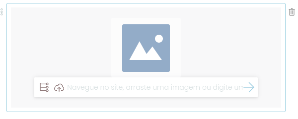
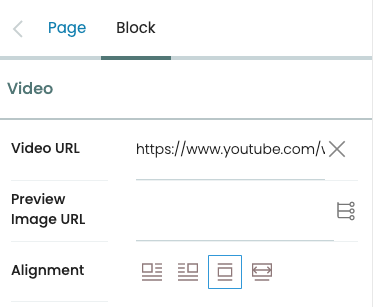

Gerenciando blocos
Contents
Gerenciando blocos#
Gerenciando blocos com Volto.
Editando conteúdo usando blocos#
Volto utiliza a interface Pastanaga UI, oferendo uma composição de página visual utilizando blocos para você. O editor de blocos oferece para você a adição, modificação, reordenação e remoção de blocos de acordo com seus requisitos. Os blocos fornecem a você a habilidade de exibir conteúdo de uma maneira específica, embora eles também definam comportamentos e possuem características específicas.
Gerenciamento de blocos#
No Volto, "blocos" são peças individuais de conteúdo que podem ser adicionadas a uma página ou outras áreas de conteúdo. Estes blocos podem ser usados em diferentes tipos de conteúdos, como texto, imagens ou multimídia. Os blocos podem ser organizados e customizados para criar uma grande variedade de layouts.
Blocos são a característica chave do Volto e são projetados para tornar fácil para os usuários a adição de conteúdo em seu website. Eles são criados utilizando componentes React, que são peças modulares de código que podem ser fácilmente ser reutilizados e customizados.
Criar bloco#
Para criar ou adicionar um bloco vazio depois de um bloco existente, clique no bloco, então pressione e tecla Enter. Um novo bloco vazio aparece.
{kind=link}
Configurar bloco#
Quando você seleciona um bloco, o editor do bloco aparece na margem direita da página. Praticamente todos os blocos possuem opções de configuração.
Reorganização de blocos#
Para reorganizar blocos, ao lado direito do bloco que deseja mover, clique no controle de movimento, mova o bloco para onde desejar e libere o controle de movimento.
Remoção de bloco#
Para remover um bloco, ao lado direito do bloco, clique no botão de remoção, um ícone de lixeira.
Tipos de bloco padão#
Volto oferece diversos tipos de blocos padrão no seu empacotamento. Você pode acessar e escolher um tipo de bloco para adicionar ao seu conteúdo quando você tem um bloco vazio.
Agora com seu bloco vazio disponível, você pode selecionar seu tipo de uma das duas formas.
Clique no botão
+do lado esquerdo do bloco vazio.
Pressione
/dentro de um bloco vazio para abrir o menu de tipos de bloco. Você pode digitar algumas letrar para filtrar os tipos de bloco disponíveis. Você pode usar as teclas de seta para cima e para baixo para navegar dentro da lista de tipos de bloco. Para selecionar o tipo de bloco, você pode clicar ou tocar ou usar a tecla Enter.
{kind=link}
Bloco descrição#
Um bloco de descrição aceita texto puro. Quando exibido, ele aparece como descrição na página, e para otimização de mecanismos de pesquisa nas meta tags HTML como:
<meta name="description" content="DESCRIPTION_TEXT" data-react-helmet="true">` e `<meta property="og:description" content="DESCRIPTION_TEXT" data-react-helmet="true">.
Bloco grid#
Um bloco grid cria uma linha única de colunas numa grade, que pode ser usada para exibir conteúdo de uma forma estruturada e organizada. Você pode selecionar o número de colunas para inserir.
Depois de escolher o número de colunas para inserir num bloco grid, você pode gerenciar as colunas.
Especifique o tipo do bloco numa coluna clicando em seu botão
+.Reorganize a ordem das colunas no bloco grid arrastando e soltando elas.
Adicione uma coluna ao bloco grid clicando no botão
+no lado superior esquerdo dele.Remova uma coluna do bloco grid clicando no seu botão
×.
Bloco html#
Um bloco HTML permite aos usuários adicionar código HTML customizado em uma página. Isto pode ser útil para adicionar funcionalidades ou estilos customizados em uma página, ou para integração com serviços externos ou aplicações. Por exemplo, você pode inserir um trecho de HTML ou componente de um serviço de terceiros. É possível embutir um calendário, botão de doação ou pagamento, ou mídia social em uma página.
Para usar um bloco HTML, você precisa ter algum conhecimento sobre como escrever HTML. Se você obtiver um trecho de HTML de um terceiro que você pode copiar e colar no bloco.
Bloco hero#
Um bloco hero cria um banner de largura total ou cabeçalho para uma página. Ele é tipicamente usado para destacar conteúdo importante ou para criar um impacto visual no topo da página.
{kind=link}
Blocos hero tipicamente incluem uma imagem ou cor de fundo. Eles também podem incluir um título, descrição e links para outras páginas do seu site.
Você pode usar o editor de blocos para configurar suas opções. Você pode configurar a imagem de fundo ou a cor, seu título, descrição e links. Para links, você pode fornecer um endereço externo ou selecionar uma página do seu site clicando no ícone lista e fornecer um título para o link.
Bloco imagem#
Um bloco imagem permite inserir uma imagem numa página e configurar seus atributos.
Depois da inclusão de um bloco imagem, uma imagem precisa ser especificada através de qualquer um dos seguintes métodos:
Escolha uma imagem existente no site clicando no ícone de lista do bloco.
Envie uma nova imagem ou clicando no ícone de upload do bloco ou arrastando e soltando.
Forneça um endereço remoto da imagem na área de texto do bloco. Clique no ícone de seta para salvar o endereço.
Depois que você especificou uma imagem, suas opções de configuração se tornar disponíveis.

- Origem
Caminho ou endereço para a imagem.
- Texto alternativo
Texto alternativo (alt text) é usado para leitores de tela e mecanismos de busca para descrever a imagem. Texto alternativo não deve ser usado para imagens decorativas, pois adiciona ruído aos leitores de tela.
- Alinhamento
Opções para alinhamento incluindo a esquerda, a direita, centralizado e largura total.
- Tamanho da imagem
O tamanho da imagem determina a exibição relativa a largura, qual seja pequeno, médio ou grande
- Link para
Você pode fornecer um endereço no campo de texto, ou clicar no ícone lista e escolher uma página do site para o link alvo. Você pode opcionalmente fazer o link abrir em uma nova aba quando o usuário clicar nele marcando a caixa de seleção Abrir em nova aba.
Bloco grid de imagens#
Um bloco de imagens apresenta uma linha de imagens numa página. É usado tipicamente para mostrar uma coleção de imagens de uma maneira agradável. Pode ser configurado para mostrar imagens em diferentes layouts e estilos.
Depois de escolher o número de imagens a inserir em um bloco de grid de imagens, você pode configurar as imagens. Funciona da mesma forma que configurar um única imagem em um bloco de imagem.
- Origem
O caminho ou endereço da imagem
- Texto alternativo
Texto alternativo (alt text) é usado para leitores de tela e mecanismos de busca para descrever a imagem. Texto alternativo não deve ser usado para imagens decorativas, pois adiciona ruído aos leitores de tela.
- Alinhamento
Opções para alinhamento incluindo a esquerda, a direita, centralizado e largura total.
- Tamanho da imagem
O tamanho da imagem determina a exibição relativa a largura, qual seja pequeno, médio ou grande
- Link para
Você pode fornecer um endereço no campo de texto, ou clicar no ícone lista e escolher uma página do site para o link alvo. Você pode opcionalmente fazer o link abrir em uma nova aba quando o usuário clicar nele marcando a caixa de seleção Abrir em nova aba.
Você também pode gerenciar as imagens em um block de grid de imagens.
Reorganize a ordem das imagens no bloco de grid de imagens arrastando e soltando elas.
Adicione uma imagem ao bloc de grid de imagens clicando no botão
+no seu lado superior esquerdo.Remova uma imagem do bloco de grid de imagens clicando no seu botão
×.
Depois da inclusão de um bloco imagem, uma imagem precisa ser especificada através de qualquer um dos seguintes métodos:
Escolha uma imagem existente no site clicando no ícone de lista do bloco.
Envie uma nova imagem ou clicando no ícone de upload do bloco ou arrastando e soltando.
Forneça um endereço remoto da imagem na área de texto do bloco. Clique no ícone de seta para salvar o endereço.
Bloco de listagem#
O bloco de listagem permite aos usuários exibir uma lista de itens de conteúdo do seu site Plone numa página.
{kind=link}
O editor do site pode configurar o critério usado para obter itens de conteúdo, incluindo texto, titúlo, datas e criador. Os resultados obtidos podem ser configurados com uma ordenação, limite de resultados e se é para criar um lote de resultados com paginação.
{kind=link}
- Variação
Opções para variação incluem Padrão, Galeria de imagens, e Listagem.
- Chamada
Opcionalmente adiciona uma chamada para o bloco de listagem.
- Nível de cabeçalho
Nível de cabeçalho define o nível de cabeçalho para H2 ou H3.
- Critério
Adiciona um critério de pesquisa. Inclue opções para pesquisa por metadados, datas e texto. Cada critério tem suas próprias opções. Por exemplo, você pode configurar a busca por conteúdo que foi criado entre duas datas. Ou pela sua localização em um caminho do seu site Plone.
- Ordenação
Ordena os resultados pela opção escolhida. Opções incluídas metadados, datas e texto.
- Limite de resultados
Limita o número de resultados retornado.
- Tamanho do lote de items
Agrupa os itens do resultado da pesquisa em um tamanho de lote especificado.
Bloco mapas#
O bloco mapa permite o usuário a adicionar um mapa em uma página. É tipicamente usado para exibir localização ou região geográfica, ou fornecer rotas de viagem.
Para usar o bloco mapa, o serviço de mapas de um terceiro deve fornecer um trecho de código HTML que você pode copiar e colar no bloco mapa.
Usualmente o trecho inclui uma marcação HTML <iframe>.
Depois que você cola o trecho de código na configuração do bloco de mapa, você verá opções adicionais.
- Endereço do mapa
O endereço do mapa.
- Texto alternativo
Texto alternativo (alt text) é usado para leitores de tela e mecanismos de busca.
- Alinhamento
Opções para alinhamento incluem esquerdo, direito, centralizado ou largura total.
Bloco de pesquisa#
O bloco de pesquisa fornece uma interface de pesquisa a visitantes para buscar conteúdo em um site Plone.
{kind=link}
O editor do site pode configurar seus critérios e aspectos de pesquisa através de diversos parâmetros, incluindo texto, status, datas e criador.
{kind=link}
Os resultados de pesquisa podem ser configurados com uma ordenação, limite de resultados e se os resultados devem ser agrupados com paginação. O editor do site pode escolher quais controles oferecer ao visitante, incluindo ordenação e total de resultados.
Todo
Adicionar imagem com as opções de configuração omitidas.
Opções básicas#
- Variação
Opções para variação incluem Facetas no lado direito, Facetas no lado esquerdo, and Facetas no topo.
- Modelo de resultados
Opções para o modelo de resultados incluem Padrão, Galeria de imagens e Listagem.
- Chamada
O valor exibido acima da caixa de pesquisa como cabeçalho.
Opções de consulta básicas para pesquisa#
- Critério
Adiciona um critério de pesquisa. Inclue opções para pesquisa por metadados, datas e texto. Cada critério tem suas próprias opções. Por exemplo, você pode configurar a busca por conteúdo que foi criado entre duas datas. Ou pela sua localização em um caminho do seu site Plone.
- Ordenação
Ordena os resultados pela opção escolhida. Opções incluídas metadados, datas e texto. Opcionalmente ordene os resultados de forma reversa marcando a caixa de verificação Reversed order.
- Limite de resultados
Limita o número de resultados retornado.
- Tamanho do lote de items
Agrupa os itens do resultado da pesquisa em um tamanho de lote especificado.
Facetas#
Título da seção
{kind=link}
Bloco texto#
Todo
Precisa de conteúdo.
Bloco vídeo#
O bloco vídeo permite a um editor inserir vídeo em uma página. Forneça o endereço de um vídeo hospedado em um terceiro e clique na seta a direita para salvar. Uma prévia do vídeo é apresentada.
O bloco vídeo tem diversas opções de configuração.
- Endereço do vídeo
O endereço do vídeo.
- Endereço da imagem de prévia
Opcionalmente use uma imagem de prévia. Você pode fornecer o endereço de uma imagem no campo texto, ou clicar no ícone lista e escolher uma imagem do seu site.
- Alinhamento
Opções para alinhamento incluem esquerda, direita, centralizada e largura total.